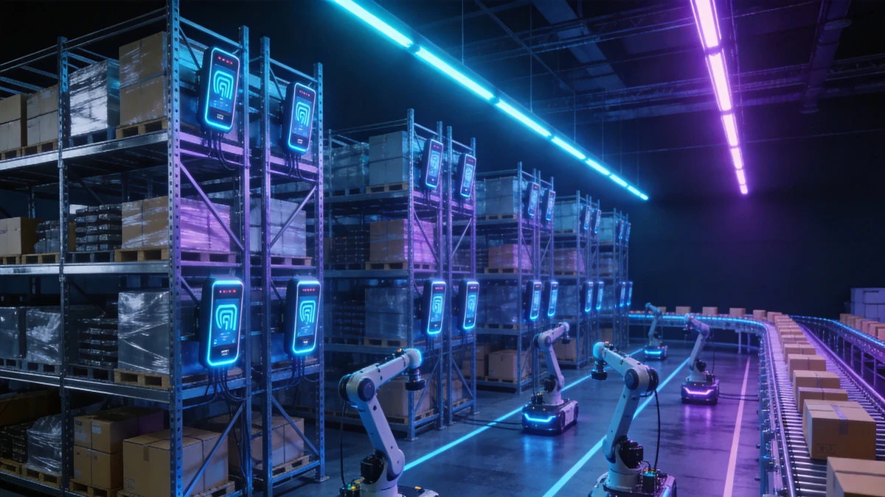
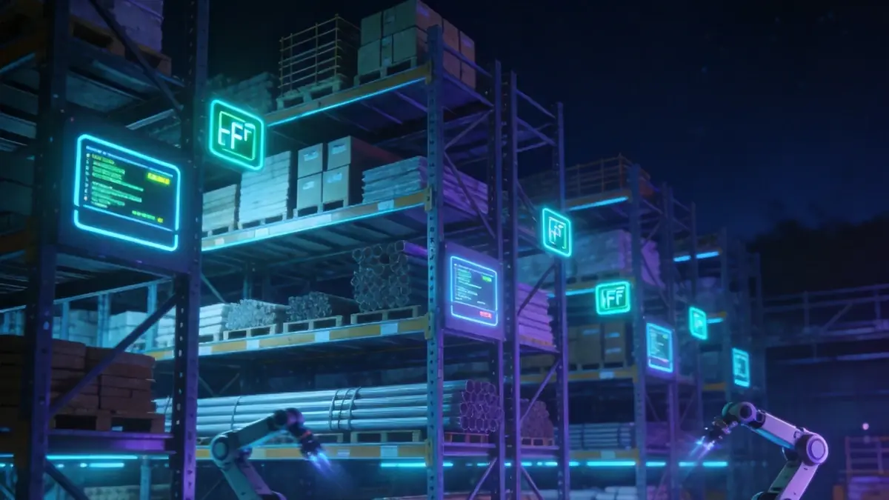
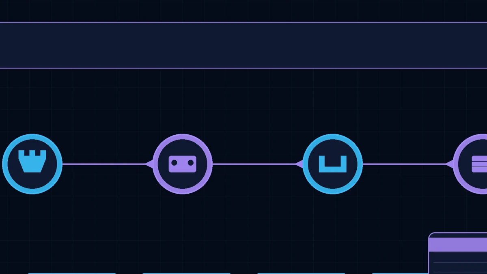
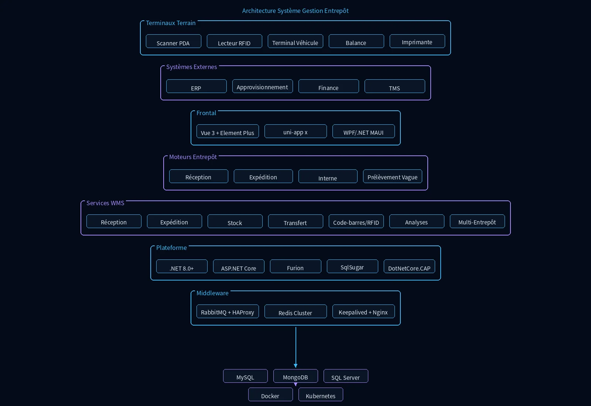
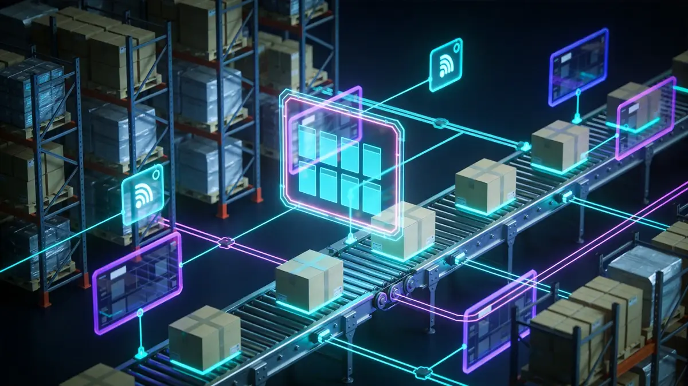

Les projets d'ingénierie impliquent de nombreux types de matériaux à rotation fréquente, et la gestion manuelle traditionnelle entraîne souvent des imprécisions d'inventaire, des excédents ou des pénuries. Le Système de Gestion d'Entrepôt couvre la soumission des demandes, l'audit des achats, la réception, les sorties, l'inventaire et l'élimination des rebuts, permettant la coordination multi-entrepôts et la traçabilité des matériaux pour aider les entreprises à maîtriser précisément les stocks, réduire les coûts d'entreposage et garantir l'approvisionnement rapide des matériaux de construction.
Fonctionnalités Clés
Gestion des Besoins
Consulter les stocks et alertes en temps réel, soumettre des demandes de matériaux par article ou équipe, et suivre les demandes avec analyse d'inventaire.
Gestion des Audits
Réaliser des révisions multiniveaux et signatures électroniques sur demandes de matériaux, bons d'entrée et de sortie, assurant un flux autorisé.
Gestion des Réceptions
Effectuer la réception quantitative et qualitative des matériaux achetés, transférés et centralisés, avec réception partielle et suivi de réapprovisionnement.
Gestion des Entrées
Gérer l'enregistrement des entrées, l'affectation des emplacements et les flux d'entrée, incluant réceptions d'achat et retours.
Gestion des Sorties
Traiter le prélèvement, l'affectation des emplacements et l'enregistrement des flux de sortie selon les demandes, avec retours et annulations.
Inventaire
Effectuer des inventaires périodiques ou ponctuels, avec scan de codes-barres, opérations par lots et ajustements d'excédents/déficits.
Matériaux Usagés
Enregistrer, contrôler et suivre les matériaux mis au rebut, surveillant l'état d'élimination et les variations de quantité.
Consommation par Équipe
Suivre l'émission et consommation de matériaux par équipe de chantier, analysant les coûts et l'efficacité d'utilisation.
Gestion des Terrassements
Gérer les faces de terrassement et profils véhicules, suivre les trajets et statistiques journalières/mensuelles de chargement et remblaiement.
Maintenance de Base
Maintenir les listes de matériaux, définitions de catégories, base fournisseurs, informations d'emplacement et configurations de flux d'approbation.
Scénarios d'application

Système de Gestion d'Entrepôt (WMS)
Le Système de Gestion d'Entrepôt (WMS) permet la gestion digitale des opérations d'entrepôt, améliorant la précision des stocks et l'efficacité opérationnelle.
Gestion Multi-Entrepôts
Gestion unifiée des entrepôts du siège, régionaux et de projet avec visibilité globale des stocks en temps réel.

Stockage de Matériaux de Construction
Gestion d'entreposage spécialisée pour matériaux de construction en vrac tels que l'acier, le ciment et équipements CVC.

Intégration Achats & Finance
Intégration profonde avec les systèmes d'achat et financiers, bouclant le cycle approvisionnement–réception–règlement.
Avantages du système
Support de la gestion multi-entrepôts et multi-propriétaires, adaptable aux entrepôts de différentes tailles et modèles d'affaires. Interfaces API ouvertes pour l'intégration avec les ERP, systèmes de gestion du transport et plateformes e-commerce.
Architecture du système

Le système adopte une architecture de processus entrepôt complet et de moteurs d'opérations : les scanners PDA, les lecteurs RFID, les terminaux embarqués, les balances et les imprimantes forment cinq types de terminaux d'opérations terrain ; la couche indépendante de moteurs d'opérations d'entrepôt couvre quatre moteurs—réception, expédition, interne et prélèvement par vagues—pilotant le processus complet de réception→CQ→mise en stock et d'agrégation de commandes→optimisation de trajet de prélèvement ; le service de codes-barres/RFID collecte les données d'opérations en temps réel, le service de stock réalise des déductions à haute concurrence basées sur Redis Cluster, et le service de transfert garantit la cohérence transactionnelle distribuée basée sur DotNetCore.CAP ; le service de gestion multi-entrepôts contrôle de manière unifiée les entrepôts du siège du groupe, les entrepôts régionaux et les entrepôts de projet.
